Ubuntu安装基础教程
作者：Teliute 来源：基础教程网
十五、安装Ubuntu9.04 返回目录 下一课9.04 版安装与前面版本类似，学习中遇到不清楚的地方，可以参考一下前面的内容，操作中注意细心，下面来看一个练习；
1、进入 live cd 桌面
1）设置好启动后，重启动计算机，可以用硬盘启动，也可以刻成光盘启动，下载地址：
进入后找蓝色链接点击下载，如 PC (Intel x86) desktop CD：
http://cn.releases.ubuntu.com/9.04/
2）启动后稍等，在出来的列表中，用方向键选择中文(简体)，按回车键进入继续；
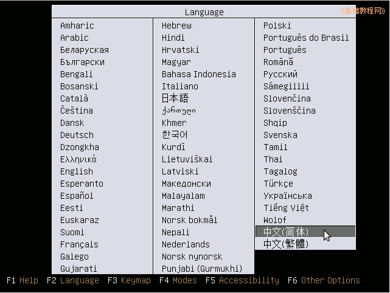
3）在出来的安装菜单里，按回车键，进入第一项“试用 Ubuntu”，耐心等待进入桌面；
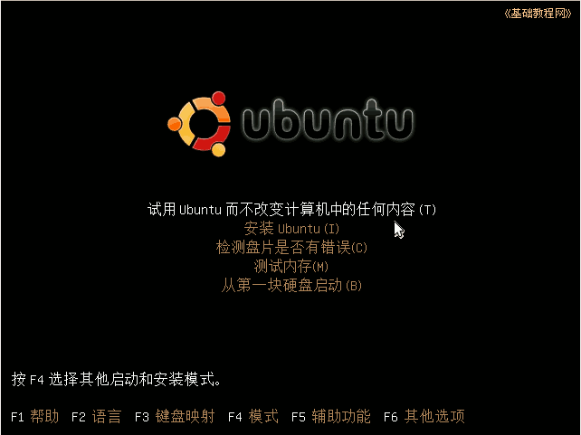
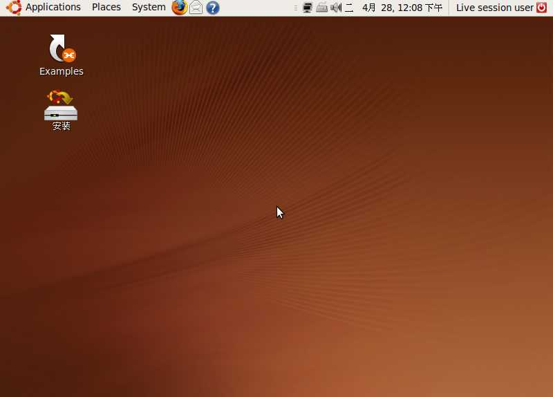
5）对于硬盘安装，点左上角菜单： Application－Accessories－Terminal 进入终端，中文是“应用程序－附件－终端”；
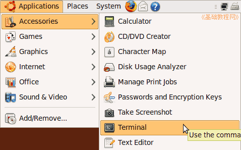
6）输入命令 sudo umount -l /isodevice 然后按一下回车键，没什么提示就是成功了；
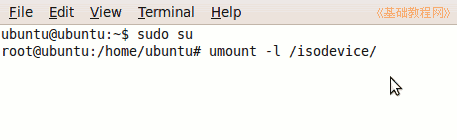
2、安装系统
1）双击桌面“安装”图标，稍等出来一个“欢迎”面板，点右下角“Forward”前进按钮继续；
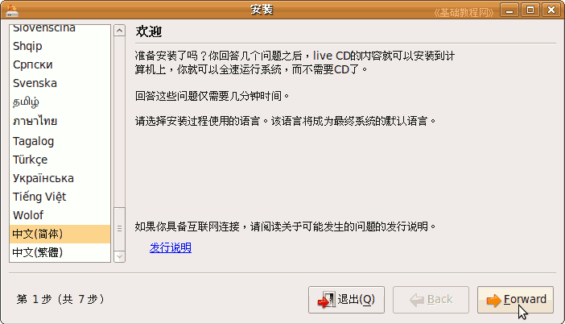
2）第2步是询问所在地，默认选的是上海(shanghai)，这些可以安装好了再调整，直接点“Forward”继续；
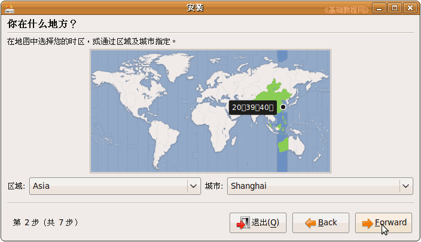
3）接下来第3步是询问键盘布局，检查一下是 China 或者 USA，直接点“Forward”前进按钮即可；
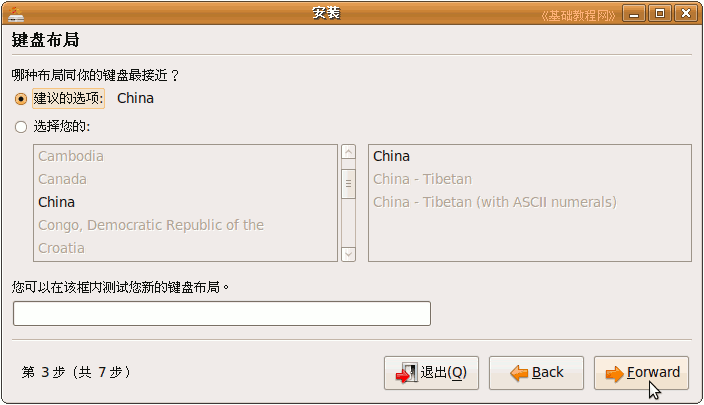
前面这三步都可以选默认的直接前进，第四步分区开始要细致耐心；
4）在第4步出来的分区面板里，选择下边的“手动”，点“Froward”继续；
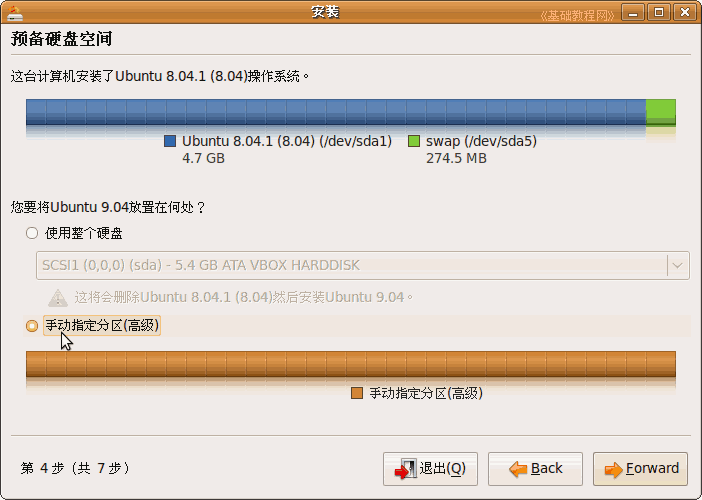
5）点“前进”按钮，出来一个磁盘扫描滚动条，然后显示整个硬盘的分区情况，
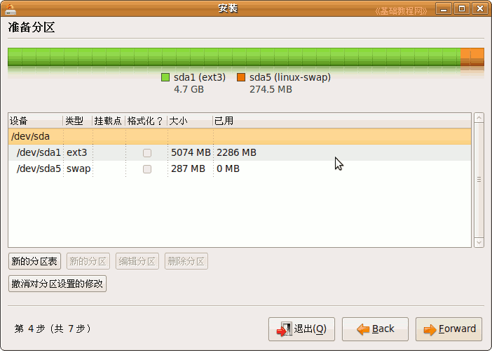
6）新建分区可以参考前面的第7课和第13课，这儿是覆盖安装原先的 Ubuntu 8.04，
点击选中原来的 ext3 主分区，然后点下边的“编辑分区”按钮；
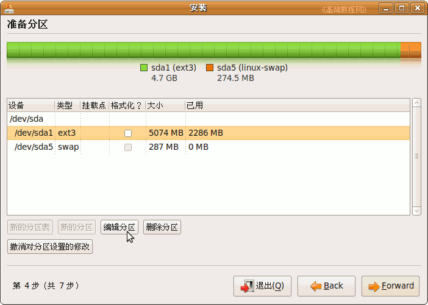
7）在出来的对话框中，点“用于”右边的下拉列表，选择 Ext4，“格式化”右边打勾选中，“挂载点”右边选 /
注意，如果不打勾“格式化”，分区里的内容不会被删除，原来的 /home 分区不要打勾，还挂载在 /home 上；
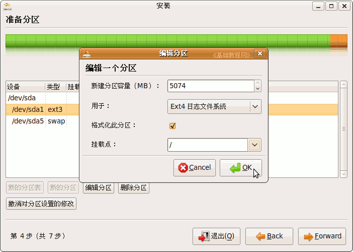
8）原来的 swap分区不用再编辑，检查一下各个分区都编辑好了，点“Forward”继续，
出来一个个人信息面板，依次输入自己的用户名、密码、计算机名，然后点“Forward”继续，密码可以记到一个本子上；
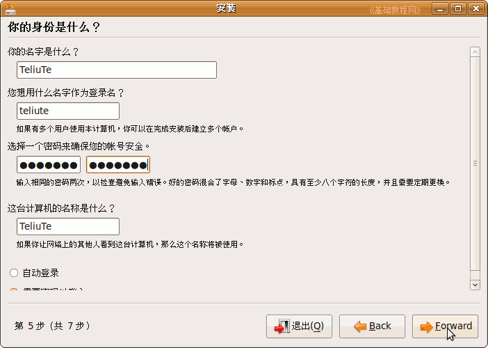
9）如果提示密码太简单，可以换一个，或者点“继续”仍然使用，出来一个小结面板，下面提示那些分区要被格式化，
如果有Windows双系统，不想破坏原来的引导记录，可以点右下角的“高级”，把引导程序装到别的分区，参考前面课程；
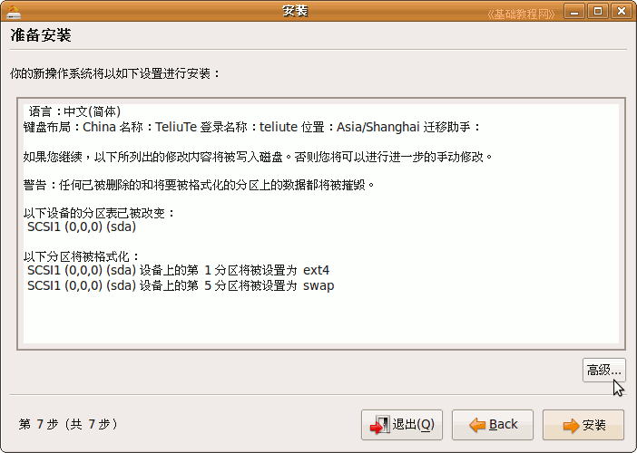
10）检查好确认无误，点右下角的“安装”按钮，开始安装；
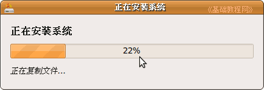
11）耐心等待完成，然后出来一个对话框，点“现在重启”完成安装；
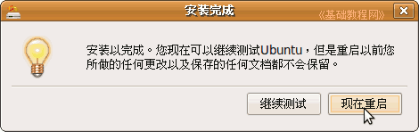
12）然后提示取出光盘，然后按回车键，重新启动计算机，安装完成；
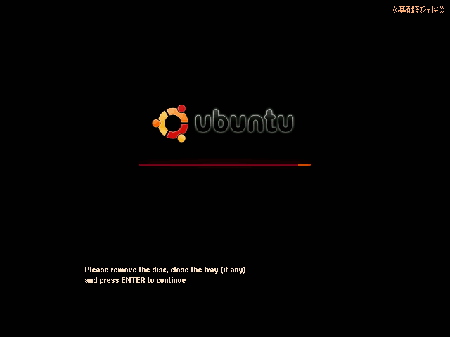
3、运行系统
１）重新启动后，进入一个登录界面，输入用户名按回车键，再输入密码按回车键，进入系统；
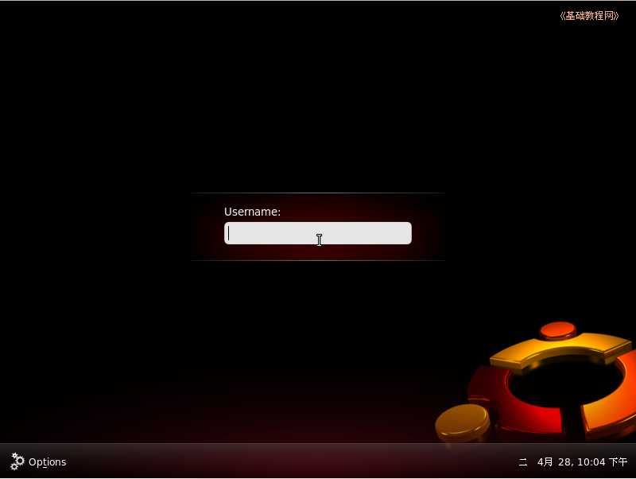
2）进入桌面后先连网，找到右上角一个网络的图标，瞄准点右键，选“Edit Connections..”；
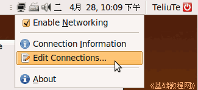
3）对于局域网上网，在出来的对话框里，选中点“Auto eth0”，点右边的“Edit..”按钮，
先出来一个认证对话框，输入自己的密码点右下角按钮；
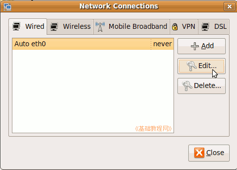 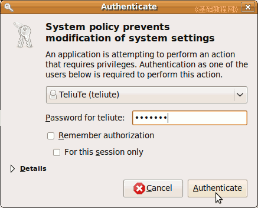
4）在出来的对话框里，选择 IPV4 Setting 标签，在下面的 Method 里选“Manual”手动，再点下边的 ＋Add 按钮，
在出来的文本框里，依次输入 IP 地址、子网掩码、网关，然后按回车键确定，在下面的 DNS 里输入 DNS 服务器地址，
检查一下，点右下角的“Apply”应用按钮；
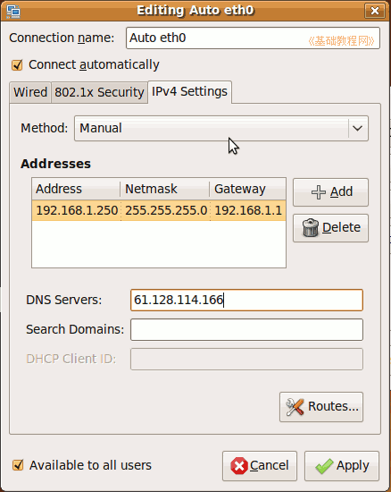
回到原来对话框点“Close”关闭，重新启动计算机就可以上网了；
5）对于ADSL拨号宽带上网，在上面第3步出来的对话框右边，点 DSL 标签，然后点 ＋Add 按钮；
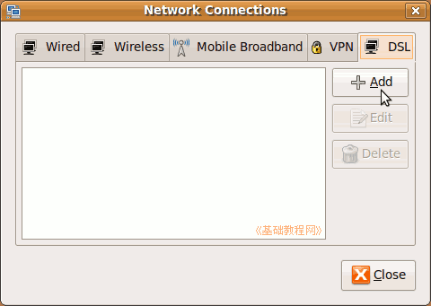
6）在出来的对话框里，先打勾上边的 “Connect automatically”自动连接，然后在 usename里输入ADSL宽带用户名，
下面的 password 里，输入宽带密码，然后点右下角的“Apply”应用按钮；
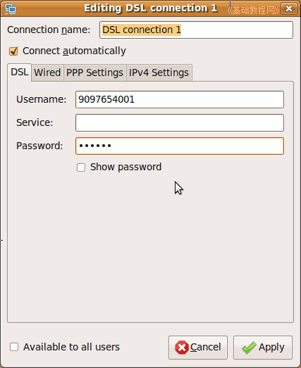
关闭对话框以后，重新启动计算机(Restart..)，就可以上网了，命令行使用 sudo pppoeconf 命令也可以；
4、更新系统
1）连接好网络后先换源，可以参考前面的第9课；
2）安装语言包，在出来的“不完整语言支持”对话框中，点左下角的“Run this action now”，安装语言包，
也可以参考前面的课程；
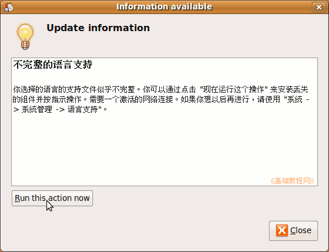
3）如果出来缺少语言信息对话框，点“Update”更新，出来一个认证密码框，输入自己的密码，按回车键；
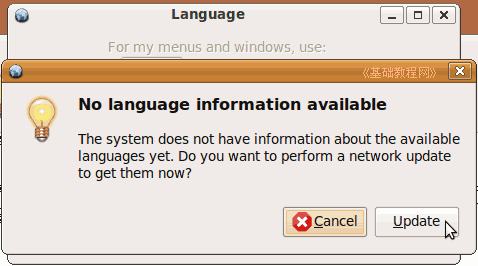 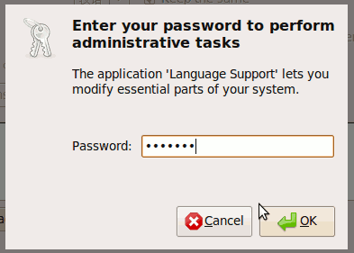
4）待语言包更新后，在出来的语言支持安装对话框中，点右下角的“Install”，然后耐心等待完成；
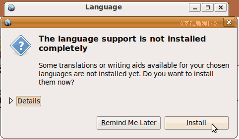 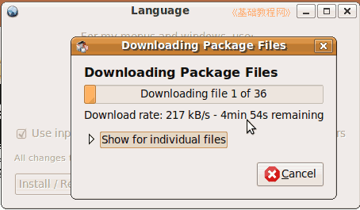
5）安装完成后，关闭两个对话框，
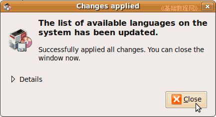 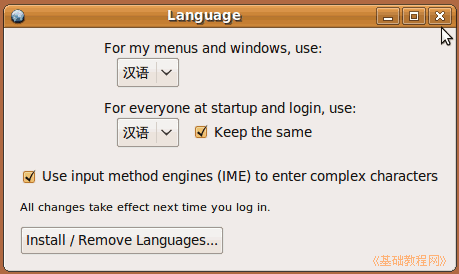
6）然后点右上角的退出按钮，选择“Log Out..”注销退出，重新登录后就是中文界面了，
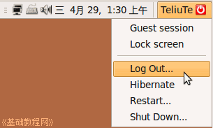
如果出来更新管理器，也更新一下；
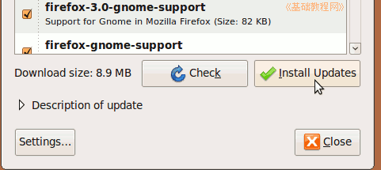
本节学习了安装 ubuntu 9.04 的基本方法，如果你成功地完成了练习，请继续学习下一课内容；
本教程由86团学校TeliuTe制作|著作权所有
基础教程网：http://teliute.org/
美丽的校园……
|
|
|
|
|
|
转载和引用本站内容，请保留作者和本站链接。